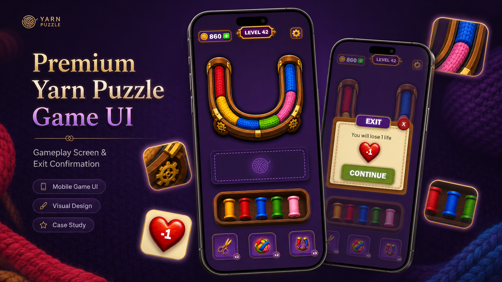
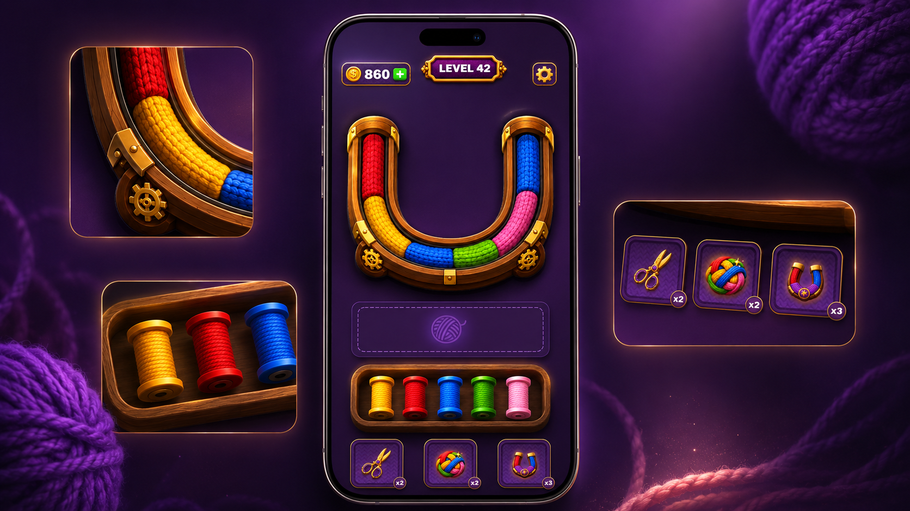
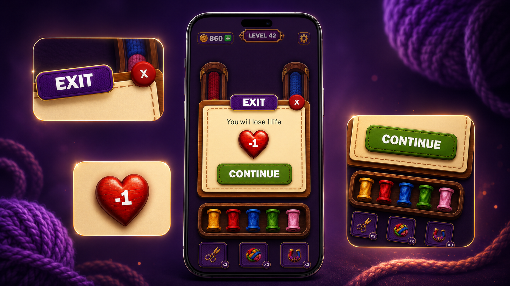

A cozy yet premium mobile puzzle. Untangle the colored yarn, sort the spools, and beat the clock, all wrapped in a warm, jewel-toned interface with tactile wooden frames and gold detailing.

A single point of focus, the yarn track, framed by a carved wooden HUD. Coins and level sit at the top, while the spool tray and power-ups (scissors, shuffle, magnet) stay within thumb reach.

Leaving mid-level costs a life, so the modal makes the stake clear at a glance. A single red heart marked "−1", a confident Continue as the primary action, and a quiet way out.
